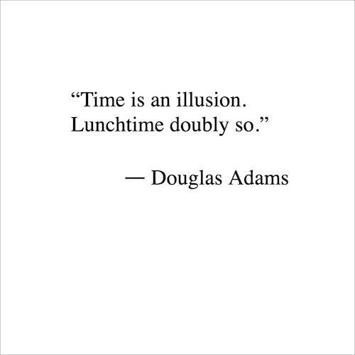

Built-ins
Built-ins in Evy are pre-defined functions and events that allow for user interaction, graphics, animation, mathematical operations, and more.
Functions are self-contained blocks of code that perform a specific task. Events are notifications that are sent to a program when something happens, such as when a user moves the mouse or presses a key.
For a more formal definition of the Evy syntax, see the Language Specification, and for an intuitive understanding see syntax by example.
#Table of Contents
-
Input and Output
print, read, cls, printf -
Types
len, typeof -
Map
has, del -
Program control
sleep, exit, panic -
Conversion
str2num, str2bool -
Errors
Panic, Recoverable Errors -
String
sprint, sprintf, join, split, upper, lower, index, startswith, endswith, trim, replace -
Random
rand, rand1 -
Math
min, max, floor, ceil, round, pow, log, sqrt, sin, cos, atan2 -
Graphics
move, line, rect, circle, color, colour, width, clear, grid, gridn, poly, ellipse, stroke, fill, dash, linecap, text, font -
Event Handlers
key, down, up, move, animate, input
#Input and Output
#print
print prints the arguments given to it to the output area. It separates them by
a single space and outputs a newline character at the end.
#Example
print "Hello"
print 2 true "blue"
print "array:" [1 2 3]
print "map:" {name:"Scholl" age:21}
Output
Hello
2 true blue
array: [1 2 3]
map: {name:Scholl age:21}
#Reference
print a:any...
The print function prints its arguments to the output area, each separated by a
single space and terminated by a newline character. If no arguments are provided it only
prints the newline character.
The backslash character \ can be used to represent special characters in
strings. For example, the \t escape sequence represents a tab character, and
the \n escape sequence represents a newline character. Quotes in string
literals must also be escaped with backslashes, otherwise they will be interpreted as the
end of the string literal. For example:
print "Here's a tab: 👉\t👈\nShe said: \"Thank you!\""
Output
Here's a tab: 👉 👈
She said: "Thank you!"
In a browser environment print outputs to the output area. When running Evy
from the command line interface, print prints to standard out.
#read
read reads a line of input from the user and returns it as a string. The
newline character is not included in the returned string.
#Example
name := read
print "Hello, "+name+"!"
Input
Mary Jackson
Output
Hello, Mary Jackson!
#Reference
read:string
The read function returns a string that contains the line of input that the
user entered up until, excluding the newline character. It is a blocking functions, which
means that it will not return until the user has entered a line of input and pressed the
Enter key.
In a browser environment read reads from the text input area. When running Evy
from the command line interface, read reads from standard in.
#cls
cls clears the output area of all printed text.
#Example
print "Hello"
sleep 1
cls
print "Bye"
Output
Bye
#Reference
cls
The cls function clears all text output. In a browser environment
cls clears the output area. When running Evy from the command line interface,
cls clears the terminal, similar to the Unix clear or Windows
cls commands.
#printf
printf stands for print formatted.
printf prints its arguments to the output area according to a
format string. The format string is the first argument, and it contains
specifiers. Specifiers start with a percent sign %. They tell
the printf function how and where to print the remaining arguments inside the
format string. The rest of the format string is printed to the output area without changes.
Here are some valid specifiers in Evy:
| Specifier | Description |
|---|---|
%v |
the argument in its default format |
%q |
a double-quoted string |
%% |
a percent sign % |
#Example
printf "The tank is 100%% full.\n\n"
weather := "rainy"
printf "It is %v today.\n" weather
rainfall := 10
printf "There will be %vmm of rainfall.\n" rainfall
unicorns := false
printf "There will be unicorns eating lollipops: %v.\n\n" unicorns
quote := "Wow!"
printf "They said: %q\n" quote
printf "Array: %v\n" [1 2 3]
printf "Map: %v\n" {a:1 b:2}
Output
The tank is 100% full.
It is rainy today.
There will be 10mm of rainfall.
There will be unicorns eating lollipops: false.
They said: "Wow!"
Array: [1 2 3]
Map: {a:1 b:2}
#Reference
printf format:string a:any...
The printf function prints its arguments to the output area according to the
format string that is the first argument. The
specifiers that start with % and are contained in the format
string are replaced by the remaining arguments in the given order. For example, the
following code
printf "first: %s, second: %s" "A" "B" prints
first: A, second: B.
Full list of valid specifiers in Evy:
| Specifier | Description |
|---|---|
%v |
the argument in a default format |
%t |
the word true or false |
%f |
decimal point (floating-point) number, e.g. 123.456000 |
%e |
scientific notation, e.g. -1.234456e+78 |
%s |
string value |
%q |
a double-quoted string |
%% |
a literal percent sign %; consumes no value |
If the arguments for the %s, %q, %f, %e,
and %t specifiers do not match the required type, a panic will occur.
The width and precision of a floating-point number can be
specified with the %f and %v format specifiers.
- Width is the number of characters that will be used to print the number. If the width is not specified, it will be calculated based on the size of the number. It can be useful for padding and aligned output.
-
Precision is the number of decimal places that will be displayed. If the precision is not
specified, it will be set to 6 for
%f.
Here is a table that shows the different ways to specify the width and precision of a floating-point number:
| Verb | Description |
|---|---|
%f |
default width, default precision |
%7f |
width 7, default precision |
%.2f |
default width, precision 2 |
%7.2f |
width 7, precision 2 |
%7.f |
width 7, precision 0 |
If the width/precision is preceded by a -, the value is padded with spaces on
the right rather than the left. If it is preceded by a 0, the value is padded with leading
zeros rather than spaces.
The width, precision and alignment prefix (- or 0) can be used
with all valid specifiers. For example:
printf "right: |%7.2f|\n" 1
printf "left: |%-7.2v|\n" "abcd"
printf "zeropad:|%07.2f|\n" 1.2345
Output
right: | 1.00|
left: |ab |
zeropad:|0001.23|
#Types
#len
len returns the number of characters in a string, the number of elements in an
array or the number of key-value pairs in a map.
#Example
l := len "abcd"
print "len \"abcd\":" l
l = len [1 2]
print "len [1 2]:" l
l = len {a:3 b:4 c:5}
print "len {a:3 b:4 c:5}:" l
Output
len "abcd": 4
len [1 2]: 2
len {a:3 b:4 c:5}: 3
#Reference
len:num a:any
The len function takes a single argument, which can be a string, an array, or a
map. If the argument is a string, len returns the number of characters in the
string. If the argument is an array, len returns the number of elements in the
array. If the argument is a map, len returns the number of key-value pairs in
the map. If the argument is of any other type, a panic will occur.
#typeof
typeof returns the type of the argument as string value.
#Example
a:any
a = "abcd"
t := typeof a
print "typeof \"abcd\":" t
t = typeof {kind:true strong:true}
print "typeof {kind:true strong:true}:" t
t = typeof [[1 2] [3 4]]
print "typeof [[1 2] [3 4]]:" t
t = typeof [1 2 true]
print "typeof [1 2 true]:" t
print "typeof []:" (typeof [])
Output
typeof "abcd": string
typeof {kind:true strong:true}: {}bool
typeof [[1 2] [3 4]]: [][]num
typeof [1 2 true]: []any
typeof []: []any
#Reference
typeof:string a:any
The typeof function takes a single argument, which can be of any type. The
function returns a string that represents the type of the argument. The string returned by
typeof is the same as the type in an Evy program, for example num,
bool, string, []num, {}[]any. For an
empty composite literal, typeof returns [] or {} as
it can be matched to any subtype, e.g. [] can be passed to a function that
takes an argument of []num, or []string.
#Map
#has
has returns whether a map has a given key or not.
#Example
map := {a:1}
printf "has %v %q: %t\n" map "a" (has map "a")
printf "has %v %q: %t\n" map "X" (has map "X")
Output
has {a:1} "a": true
has {a:1} "X": false
#Reference
has:bool map:{} key:string
The has function takes two arguments: a map and a key. It returns true if the
map has the key, and false if the map does not have the key. The map can be of any value
type, such as {}num or {}[]any and the key can be any string.
#del
del deletes a key-value entry from a map.
#Example
map := {a:1 b:2}
del map "b"
print map
Output
{a:1}
#Reference
del map:{} key:string
The del function takes two arguments: a map and a key. It deletes the key-value
entry from the map if the key exists. If the key does not exist, the function does nothing.
The map can have any value type, and the key can be any string. It is safe to delete values
from the map with del while iterating with a for … range loop.
#Program control
#sleep
sleep pauses the program for the given number of seconds.
sleep can be used to create delays in Evy programs. For example, you could use
sleep to create a countdown timer.
#Example
print "2"
sleep 1
print "1"
Output
2
1
#Reference
sleep seconds:num
The sleep function pauses the execution of the current Evy program for at least
the given number of seconds. Sleep may also pause for a fraction of a second, e.g.
sleep 0.1.
#exit
exit terminates the program with the given status code.
#Example
input := "not a number"
n := str2num input
if err
print errmsg
exit 1
end
print n
Output
str2num: cannot parse "not a number"
#panic
panic prints the given error message and terminates the program immediately. It
is used to report unrecoverable errors.
#Example
scale := -5
if (scale) <= 0
panic "scale must be positive"
end
Output
line 4 column 5: scale must be positive
#Reference
panic msg:string
The panic function takes a single argument, which is the error message that the
program will print before it terminates with exit status 1.
#Conversion
#str2num
str2num converts a string to a number. If the string is not a valid number, it
returns 0 and sets the global err variable to true.
#Example
n:num
n = str2num "1"
print "n:" n "err:" err
n = str2num "NOT-A-NUMBER"
print "n:" n "err:" err
Output
n: 1 err: false
n: 0 err: true
#Reference
str2num:num s:string
The str2num function converts a string to a number. It takes a single argument,
which is the string to convert. If the string is a valid number, the function returns the
number. Otherwise, the function returns 0 and sets the global err variable to
true. For more information on err, see the
Recoverable Errors section.
#str2bool
str2bool converts a string to a boolean. If the string is not a valid boolean,
it returns false and sets the global err variable to
true.
#Example
b:bool
b = str2bool "true"
print "b:" b "err:" err
b = str2bool "NOT-A-BOOL"
print "b:" b "err:" err
Output
b: true err: false
b: false err: true
#Reference
str2bool:bool s:string
The str2bool function converts a string to a bool. It takes a single argument,
which is the string to convert. The function returns true if the string is
equal to "true", "True",
"TRUE", or "1", and false if the
string is equal to "false", "False",
"FALSE", or "0". The function returns
false and sets the global err variable to true if the
string is not a valid boolean. For more information on err, see the
Recoverable Errors section.
#Errors
Evy has two types of errors: parse errors and run-time errors.
-
parse errors are reported before the program is executed. They report
errors with the syntax, such as a missing closing quote for
print "abc, an illegal character, such as#, or type errors, such asmin "a" "b". - Run-time errors only occur if there are no parse errors and the code path causing the error is executed.
For example, the following code will sometimes cause a run-time error:
n:num
if (rand1) < 0.5
n = str2num "not-a-number"
else
n = str2num "5"
end
print "n:" n "error:" err
Half the time, the program above will cause a run-time error and print
n: 0 error: true. The other half of the time, no error will occur and the
program will print n:5 error:false.
Evy has two types of run-time errors: panic and error.
- A panic is non-recoverable. It causes the program to exit immediately.
- An error is recoverable. The program can continue running after the error is handled.
#Panic
A panic causes the program to exit immediately and print an error message. Panics typically occur when the program encounters a situation that it cannot handle, such as trying to access an element of an array that is out of bounds. Panics cannot be intercepted by the program, so it is important to take steps to prevent them from occurring in the first place.
One way to do this is to use guarding code, which is code that checks for potential errors and takes steps to prevent them from occurring. For example, guarding code could be used to check the length of an array before trying to access an element to avoid an out of bounds error. If the access index is out of bounds, the guarding code could report the error.
Here is an example of a panic:
arr := [0 1 2]
i := 5 // e.g. user input
print arr[i] // out of bounds
print "This line will not be executed"
This code will cause a panic because the index 5 is out of bounds for the array
arr. The program will exit with the error message
line 3: panic: index out of bounds: 5
If you want your own code to panic, you can use the built-in panic function.
This is typically used to highlight mistakes or bugs in your program, such as invalid
function arguments or conditions that should never occur. The panic function
exits your program immediately, so it should only be used when it is clear that the program
cannot continue. For more information, see the Panic section under
Program Control above.
#Recoverable Errors
The global err variable is used to indicate whether a recoverable error has
occurred. The global errmsg variable stores a detailed message about the error
that occurred.
Recoverable errors are caused by code that could not be prevented from running, such as
converting a user input string to a number if the string is not a number. This recoverable
error will set the global err variable to true and the program
will continue executing. If there is no error, err is set to
false.
The global errmsg variable stores a detailed message about the error which is
set alongside err. errmsg is set to the empty string
"" if no error has occurred. If an error does occur,
errmsg is set to a message that describes the error.
When a function that could potentially cause an error finishes executing without an error,
the err variable is reset to false and the
errmsg variable is set to the empty string. This is done even if the
err variable was previously set to true or the
errmsg variable was not empty. Therefore, it is up to the program to check the
err variable after any possible error occurrence.
Here is an example of a recoverable error:
n := str2num "NOT A NUM"
print "num:" n
print "err:" err
print "errmsg:" errmsg
Output
num: 0
err: true
errmsg: str2num: cannot parse "NOT A NUM"
If you want your own code or function to cause a recoverable error, follow the convention of
setting the err variable to true and the
errmsg variable to a message describing the error in the error case. In the
non-error case, make sure to set the err variable to false.
#String
#sprint
sprint stands for print to string.
It returns a string representation of the arguments given to it. It separates them by a
single space. Unlike print, there is no newline added to the end.
#Example
s := sprint "a" [true] {a:1 b:2}
printf "%q\n" s
printf "%q\n" (sprint)
Output
"a [true] {a:1 b:2}"
""
#Reference
sprint:string a:any...
The sprint function takes any number of arguments and returns a string that
represents them, separated by a single space. The arguments can be of any type, including
strings, numbers, booleans, and maps. Unlike the print function, there is no
newline added to the end of the string.
#sprintf
sprintf stands for print formatted to string.
sprintf returns a string representation of its arguments according to a
format string. Formatting in sprintf and
printf work the same way, see printf.
#Example
s := sprintf "%10q: %.f" "val" 123.45
print s
Output
"val": 123
#Reference
sprintf:string format:string a:any...
The sprintf function returns a string representation of its arguments according
to a format string. The format string controls how the arguments are
formatted. The sprintf function works the same way as the
printf function, and the formatting syntax is the same, see
printf.
#join
join concatenates the elements of an array of strings into a single string,
with the given separator string placed between elements.
#Example
s := join ["a" "b" "c"] ", "
print s
Output
a, b, c
#Reference
join:string elems:[]string sep:string
The join function takes two arguments: an array of strings and a separator
string. The array of strings is the list of elements to be concatenated. The separator
string is the string that will be placed between elements in the resulting string.
The join function returns a single string that is the concatenation of the
elements in the list of strings, with the separator string placed between elements.
#split
split splits a string into a list of substrings separated by the given
separator. The separator can be any string, including the empty string.
#Example
print (split "a,b,c" ",")
print (split "a,b,c" ".")
print (split "a,b,c" "")
Output
[a b c]
[a,b,c]
[a , b , c]
#Reference
split:[]string s:string sep:string
The split function takes two arguments: the string to be split and the
separator string. The string to be split is the string that will be split into substrings.
The separator string is the string that will be used to split the string.
The split function returns a list of substrings. The list of substrings
contains all of the substrings of the original string that are separated by the separator
string.
If the string does not contain the separator, the split function returns an
array of length 1 containing the original string.
If the separator is the empty string, the split function splits the string
after each character (UTF-8 sequence).
If both the string and the separator are empty, the split function returns an
empty list.
#upper
upper returns a string with all lowercase letters converted to uppercase.
#Example
s := upper "abc D e ü"
print s
Output
ABC D E Ü
#Reference
upper:string s:string
The upper function takes a single argument: the string to be converted to
uppercase. The function returns a new string with all lowercase letters converted to
uppercase. All other characters are left unchanged.
The upper function uses the Unicode character database to determine which
characters are lowercase and their equivalent uppercase form.
#lower
lower returns a string with all uppercase letters converted to lowercase.
#Example
s := lower "abc D e ü"
print s
Output
abc d e ü
#Reference
lower:string s:string
The lower function takes a single argument: the string to be converted to
lowercase. The function returns a new string with all uppercase letters converted to
lowercase. All other characters are left unchanged.
The lower function uses the Unicode character database to determine which
characters are uppercase and their equivalent lowercase form.
#index
index returns the position of a substring in a string, or -1 if the substring
is not present.
#Example
n := index "abcde" "de"
print n
Output
3
#Reference
index:num s:string sub:string
The index function finds the index of a substring sub in a string
s. It returns the index of the first occurrence of a sub within
s, or -1 if the substring is not present.
#startswith
startswith tests whether a string begins with a given prefix.
#Example
b := startswith "abcde" "ab"
print b
Output
true
#Reference
startswith:bool s:string prefix:string
The startswith function tests whether the string s begins with
prefix and returns true if s starts with
prefix, false otherwise.
#endswith
endswith tests whether a string ends with a given suffix.
#Example
b := endswith "abcde" "ab"
print b
Output
false
#Reference
endswith:bool s:string suffix:string
The endswith function tests whether the string s ends with
suffix and returns true if s ends with
suffix, false otherwise.
#trim
trim removes leading and trailing characters from a string.
#Example
s := trim ".,..abc.de." ".,"
print s
Output
abc.de
#Reference
trim:string s:string cutset:string
The trim function removes any characters in cutset from the
beginning and end of string s. It returns a copy of the resulting string.
#replace
replace replaces all occurrences of a substring with another substring in a
string.
#Example
s := replace "abc123xyzabc abc" "abc" "ABC"
print s
Output
ABC123xyzABC ABC
#Reference
replace:string s:string old:string new:string
The replace function replaces all occurrences of the substring
old in the string s with the substring new.
#Random
#rand
rand returns a random, non-negative integer less than the argument.
#Example
print (rand 3)
print (rand 3)
Sample output
2
0
#Reference
rand:num n:num
The rand functions returns, a non-negative pseudo-random integer number in the
half-open interval [0,n). A panic occurs for n <= 0.
#rand1
rand1 returns a random, non-negative floating point number less than 1.
#Example
print (rand1)
print (rand1)
Sample output
0.7679753163102002
0.6349044894123325
#Reference
rand1:num
The rand1 function returns a pseudo-random floating point number in the
half-open interval [0.0,1.0).
#Math
#min
min returns the smaller of the two given numbers.
#Example
print (min 3 1)
Output
1
#Reference
min:num n1:num n2:num
The min function returns the smaller of the two given number arguments.
#max
max returns the greater of the two given numbers.
#Example
print (min 3 1)
Output
1
#Reference
max:num n1:num n2:num
The max function returns the greater of the two given number arguments.
#floor
floor returns the greatest integer value less than or equal to the given
number.
#Example
print (floor 2.7)
print (floor 3)
Output
2
3
#Reference
floor:num n:num
The floor function returns the greatest integer value less than or equal to its
number argument n.
#ceil
ceil returns the smallest integer greater than or equal to the given number.
#Example
print (ceil 2.1)
print (ceil 4)
Sample output
3
4
#Reference
ceil:num n:num
The ceil function returns the smallest integer greater than or equal to its
number argument n.
#round
round returns the nearest integer to the given number, rounding half away from
0.
#Example
print (round 2.4)
print (round 2.5)
Sample output
2
3
#Reference
round:num n:num
The round function returns the nearest integer to the given number argument
n, rounding half away from 0.
#pow
pow returns the value of the first number raised to the power of the second
number.
#Example
print (pow 2 3)
Output
8
#Reference
pow:num b:num exp:num
The pow function returns b to the power of exp. The
first number argument b is the base. The second number argument
exp is the exponent.
#log
log returns the logarithm of the given number, to the base of e.
#Example
printf "%.2f\n" (log 1)
printf "%.2f\n" (log 2.7183) // e
Output
0.00
1.00
#Reference
log:num n:num
The log function returns the natural logarithm, the logarithm
of the given number argument n, to the base of e.
#sqrt
sqrt returns the square root of the given number.
#Example
print (sqrt 9)
Output
3
#Reference
sqrt:num n:num
The sqrt function returns the positive square root of the number argument
n.
#sin
sin returns the sine of the given angle in radians.
#Example
pi := 3.14159265
print (sin 0.5*pi)
Output
1
#Reference
sin:num n:num
The sin function returns the sine of the given angle n in radians.
#cos
cos returns the cosine of the given angle in radians.
#Example
pi := 3.14159265
print (cos pi)
Output
-1
#Reference
cos:num n:num
The cos function returns the cosine of the given angle n in
radians.
#atan2
atan2 returns the angle in radians between the positive x-axis and the ray from
the origin to the point x y.
#Example
pi := 3.14159265
rad := atan2 1 1
degrees := rad * 180 / pi
printf "rad: %.2f degrees: %.2f" rad degrees
Output
rad: 0.79 degrees: 45.00
#Reference
atan2:num y:num x:num
The atan2 function returns the angle in radians between the positive x-axis and
the ray from the origin to the point x y. More formally, it returns the arc
tangent of y/x for given arguments y and x, using the
signs of the two to determine the quadrant of the return value.
#Graphics
Evy on the web outputs drawing commands to a drawing area called the canvas.
Positions on the canvas are defined by a coordinate system, similar to the Cartesian coordinate system used in mathematics. The horizontal dimension is called the x-axis, and the vertical dimension is called the y-axis.
A point on the canvas is defined by its x and
y coordinates, which are written as x y. For example, the
point 30 60 has an x-coordinate of 30 and a y-coordinate of 60. It is located
30 units from the left edge of the canvas and 60 units from the bottom edge.
The canvas ranges from coordinates 0 0 to 100 100. The center of
the canvas has the coordinates 50 50.
Shapes are drawn on the canvas using a pen. The pen has an
x y position and a style. The position of the pen is also known as the current
cursor position.
Some graphics functions, like line, rect, circle, and
text, create shapes on the canvas. Other graphics functions such as
color, width, and font set the style of the pen for
subsequent drawing commands.
#move
move sets the position of the pen to the given coordinates.
#Example
grid
move 30 60
circle 1
Output

#Reference
move x:num y:num
The move function sets the position of the cursor to the given
x and y coordinates. The initial cursor position is
0 0.
#line
line draws a line from the current position of the pen to the given
coordinates.
#Example
The following example draws a triangle.
move 30 20
line 70 20
line 50 50
line 30 20
Output

#Reference
line x:num y:num
The line function draws a line from the current cursor position to the given
x and y coordinates. The cursor position is then updated to the
given coordinates, which allows for easy polygon drawing.
#rect
rect draws a rectangle with the given width and height at the pen's current
position.
#Example
grid
move 40 20
rect 10 30
rect 40 20
Output

#Reference
rect width:num height:num
The rect function draws a rectangle with the given width and
height at the current cursor position. The cursor position is then updated to
the position that is the width and height away from the current position. In other words,
the opposite corner of the rectangle is at the new cursor position.
#circle
circle draws a circle with given radius at the pen's current position.
#Example
grid
move 50 50
circle 10
Output

#Reference
circle radius:num
The circle function draws a circle with the given radius centered
at the current cursor position. The cursor position does not change after drawing a circle.
#color
color changes the color of the pen. All
CSS (Cascading Style Sheets) color values
are supported. You can start by using the simpler
named CSS colors
, such as "red", "darkmagenta", and
"springgreen".
#Example
color "darkmagenta"
rect 20 20
Output
#Reference
color c:string
The color function changes the color of the stroke and the
fill to the given CSS color string c. Evy supports all
CSS color values,
including semi-transparent ones. For example, the following code changes the color to a
shade of red that is 60% opaque: color "hsl (0deg 100% 50% / 60%)".
Named CSS colors, such as "red",
"darkmagenta", and "springgreen", are a
simpler way of specifying common colors. For a complete list of named CSS colors, see the
Mozilla Developer documentation.
If the color string c is not recognized as a valid CSS color, the color does
not change. The initial color is "black".
#colour
colour is an alternate spelling of color. See
color.
#width
width sets the thickness of the lines drawn by the pen.
#Example
width 10
line 30 30
width 1
line 60 60
width 0.1
line 90 90
grid
Output

#Reference
width n:num
The width function sets the thickness of the stroke to the
given n
units. The stroke is the visible line that is drawn when using the
line function or any other shape function after setting
fill "none". The initial stroke width it 0.1 units.
#clear
clear clears the canvas. Optionally, it can take a color argument to clear the
canvas to.
#Example
The following example code shows how to draw a magenta square, clear the canvas, and then
draw a blue circle. The final result is a canvas with a blue circle centered at
20 20. The magenta square is not visible because it has been removed by the
clear function.
color "darkmagenta"
rect 20 20
clear
color "blue"
circle 5
grid
Output

#Reference
clear [c:string]
The clear function clears the canvas. It can optionally take a color as a
string argument, in which case the canvas will be cleared to that color. If no color is
specified, the canvas will be cleared to "white". Initially the
canvas is cleared to "white", not
"transparent".
#grid
grid draws a grid on the canvas. The grid is parallel to the x and y axes, and
each grid line is spaced 10 units apart.
#Example
grid
Output

#Reference
grid
The grid function draws a grid on the canvas. The grid lines are parallel to
the x and y axes, and each grid line is spaced 10 units apart. The grid lines are 0.1 units
thin and have a semi-transparent gray color, with an opacity of 50%. This makes the grid
lines faint enough to be drawn on top of other shapes. The grid lines that go through the
point 50 50, which is the center of the canvas, are slightly thicker. The
thickness of these grid lines is 0.2 units, which makes it easier to see the center of the
canvas.
The grid function is a shorthand of the gridn function with the
arguments 10 and "hsl(0deg 100% 0% / 50%)", see
gridn. It is roughly equivalent to the following Evy code. However, the current color, cursor
position, and line width are not affected by the built-in grid function.
color "hsl(0deg 100% 0% / 50%)"
for i := range 0 101 10
width 0.1
if i == 50
width 0.2
end
move i 0
line i 100
move 0 i
line 100 i
end
#gridn
gridn draws a grid on the canvas. The grid is parallel to the x and y axes, and
each grid line is spaced the given number of units apart. The color of the grid is set to
the given color.
#Example
gridn 2 "red"
Output

#Reference
gridn n:num c:string
The gridn function draws a grid on the canvas. The grid lines are parallel to
the x and y axes, and each grid line is spaced n units apart. The color of the
grid is set to the color specified by the string argument c. The default line
width is 0.1 units. Every fifth grid line is slightly thicker, with a line width of 0.2
units.
The gridn function is roughly equivalent to the following Evy code, but the
current color, cursor position, and line width are not affected by the built-in
gridn function.
c := "red"
n := 2
color c
linecnt := 0
for i := range 0 101 n
width 0.1
if linecnt % 5 == 0
width 0.2
end
linecnt = linecnt + 1
move i 0
line i 100
move 0 i
line 100 i
end
#poly
poly draws polylines and polygons for the given coordinates.
#Example
The following code draws a w-shaped red polyline and a yellow triangle.
width 1
color "red"
fill "none"
poly [10 80] [30 60] [50 80] [70 60] [90 80]
fill "gold"
poly [10 20] [50 50] [20 10] [10 20]
Output

#Reference
poly xy:[]num...
The poly function draws polylines and polygons for the given coordinates. A
polyline is a sequence of connected line segments, and a polygon is a closed polyline.
The poly function takes a variadic number of arguments of type
[]num. Each argument has to be a number array with two elements
[x y]. The first element representing the x coordinate and the second the y
coordinate of a vertex in the polyline or polygon. If the array does not have two elements,
a panic occurs. For example, the poly function can be called as follows:
poly [x1 y1] [x2 y2] [x3 y3]
Use fill "none" to draw a line without filling. To draw a closed
polygon, make sure that the first and last coordinates are the same. The
poly function does not use or change the cursor position.
#ellipse
ellipse draws an ellipse for given center, radii and optional tilt, start and
end angles.
#Example
// red circle
color "red"
ellipse 50 50 40
// yellow, flat ellipse
color "gold"
ellipse 50 50 40 10
// blue, flat ellipse tilted by 45°
color "blue"
ellipse 50 50 40 10 45
// white, flat, half ellipse tilted by 135°
color "white"
ellipse 50 50 40 10 135 0 180
Output

#Reference
ellipse x:num y:num rx:num [ry:num [tilt:num [start:num end:num]]]
The ellipse function draws an ellipse with the given center, radii, tilt, and
start and end angles. It can take 3, 4, 5, or 7 arguments. Default values are used for
omitted arguments.
The first two arguments are the coordinates of the center of the ellipse. The third argument is the radius of the ellipse in the x direction. The fourth argument is the radius of the ellipse in the y direction. If the fourth argument is omitted, the ellipse is drawn as a circle. The fifth argument is the tilt of the ellipse in degrees, with a default value of 0. The sixth and seventh arguments are the start and end angles of the ellipse in degrees, with default values of 0 and 360, respectively.
#stroke
stroke sets the color of the outline of shapes.
#Example
The following code draws two red squares, one with a blue outline.
width 1
color "red"
rect 30 30
stroke "blue"
rect 30 30
Output
#Reference
stroke c:string
The stroke function sets the color of the stroke to the given
string argument c. The stroke is the visible line that is drawn when you use
the line function or any other shape function after calling fill "none". The
initial stroke color is "black".
#fill
fill sets the color of the interior of shapes.
#Example
The following code draws a red square and a blue square with a red outline.
width 1
color "red"
rect 30 30
fill "blue"
rect 30 30
Output

#Reference
fill c:string
The fill function sets the color of the fill to the given
string argument c. The fill is the interior of a shape. The initial fill color
is "black".
#dash
dash sets the line dash pattern.
#Example
width 2
dash 5 // same as: dash 5 5, dash 5 5 5
hline 85 "red"
dash 10 4 1 4
hline 75 "blue"
dash 10 5 10 // same as: dash 10 5 10 10 5 10
hline 65 "gold"
dash // reset dash
hline 50 "black"
gridn 5 "gray"
func hline y:num c:string
color c
move 0 y
line 100 y
end
Output
#Reference
dash segments:num...
The dash function sets the line dash pattern used when stroking lines. The dash
pattern is specified as a variadic number of arguments, where each argument represents the
length of a dash or gap. For example, the arguments 5 10 would create a line
with 5-unit long dashes and 10-unit long gaps.
If the number of arguments is odd, they are copied and concatenated. For example, the
arguments 10 5 10 would become 10 5 10 10 5 10. If no arguments
are given, the line returns to being solid.
The initial dash pattern is a solid line.
#linecap
linecap sets the shape of the ends of lines.
#Example
width 5
grid
linecap "round"
hline 70
linecap "butt"
hline 50
linecap "square"
hline 30
func hline y:num
move 10 y
line 90 y
end
Output

#Reference
linecap style:string
The linecap function sets the shape of the ends of lines to the
style string argument. Valid styles are "round",
"butt" or "square". An invalid style takes no
effect.
| Style | Description |
|---|---|
"round" |
The ends of the line are rounded. |
"butt" |
The ends of the line are squared off at the endpoints. |
"square" |
The ends of the line are squared off by adding a box with an equal width and half the height of the line's thickness. |
The initial linecap style is "round".
#text
text prints text to the canvas at the current cursor position.
#Example
move 20 70
text "“Time is an illusion."
move 20 63
text "Lunchtime doubly so.”"
move 35 48
text "― Douglas Adams"
Output
#Reference
text s:string
The text function prints the string argument s to the canvas at
the current cursor position. The cursor position is not updated after writing text. Only
fill and color have an effect on the text; stroke has
no effect. For more text styling, such as setting font size or
font family, see font.
#font
font sets the font properties for text. The font properties are
family,size, weight, style,
letterspacing, baseline, and align.
#Example
font {family:"Bradley Hand, cursive" size:4}
move 10 65
text "“The wonderful thing about programming"
move 10 60
text "is that anyone can learn it and do it. You"
move 10 55
text "don't have to be a genius or have a specific"
move 10 50
text "background. You just need curiosity and"
move 10 45
text "the willingness to try.”"
// all font properties
font {
size:9
style:"normal" // "normal"
family:"Tahomana, sans-serif" // see https://developer.mozilla.org/en-US/docs/Web/CSS/font-family
weight:900
letterspacing:-0.5 // extra inter-character space. negative allowed. default:0
align:"right" // "left", "right"
baseline:"middle" // "top", "bottom", "alphabetic" (default)
}
move 90 32
color "red"
text "Grace Hopper"
color "black"
font {size:4 letterspacing:0 weight:100 style:"normal"}
move 90 25
text "computer scientist, compiler builder"
Output
The following example shows the effect of the align and
baseline properties:
font {size:6 family:"Fira Code, monospace"}
move 25 78
line 25 86
move 25 80
font {align:"left"}
text "left"
move 25 63
line 25 71
move 25 65
font {align:"right"}
text "right"
move 25 48
line 25 56
move 25 50
font {align:"center"}
text "center"
move 55 80
line 90 80
move 55 80
font {baseline:"bottom" align:"left"}
text "bottom"
move 55 65
line 90 65
move 55 65
font {baseline:"top"}
text "top"
move 55 50
line 90 50
move 55 50
font {baseline:"middle"}
text "middle"
move 55 35
line 90 35
move 55 35
font {baseline:"alphabetic"}
text "alphabetic"
Output
#Reference
font props:{}any
The font function sets the font properties for text. The font properties are
family, size, weight, style,
letterspacing, align, and baseline.
The family property specifies a prioritized list of one or more font family
names. Values are separated by commas to indicate that they are alternatives. The browser
will select the first available font. For example, the value
"Fira Code, monospace" would specify that the browser should try to
use the Fira Code font, but if that font is not available, it should use a monospace font.
The default font family is the browser default.
The size property specifies the height of a letter in canvas units. The default
size is 6.
The weight property specifies the boldness of the font. The values 100, 200,
..., 900 can be used to specify the weight of the font. The value 400 is normal, 700 is
bold. The default weight is 400.
The style property specifies the sloping of the font. The values
"normal" and "italic" can be used to specify
the style of the font. The default style is "normal".
The letterspacing property specifies the additional horizontal space between
text characters in canvas units. The default value is 0.
The align property specifies the horizontal alignment of the text. The values
"left", "right", and
"center" can be used to specify the alignment. The default value is
"left".
The baseline property specifies the vertical cursor position relative to the
vertical text position. The values "top",
"bottom", "middle", and
"alphabetic" can be used to specify the baseline. The default value
is "alphabetic".
Here is an example of how to use the font function:
font {
family:"Fira Code, monospace"
size:9
weight:700
style:"italic"
letterspacing:0.5
baseline:"top"
align:"center"
}
This code sets the font properties to use the Fira Code font, a size of 9, a weight of 700, an italic style, a letterspacing of 0.5, a top baseline, and a center alignment.
#Event Handlers
Evy first executes all top-level code in the order it appears in the source code. If there is at least one event handler, Evy then enters an event loop. In the event loop, Evy waits for external events, such as a key press or a pointer down event. When an event occurs, Evy calls the corresponding event handler function if it has been implemented. The event handler function can optionally receive arguments, such as the key character or the pointer coordinates. Once the event handler function has finished, Evy returns to the event loop and waits for the next event.
Event handlers are declared using the on keyword. Only predefined events can be
handled: key, down, up, move,
animate, and input. For example, the following code defines an
event handler for the key press event:
on key k:string
print k
end
The parameters to the event handlers must match the expected signature. The
key event handler expects a single parameter of type string, which is the
character that was pressed. The parameters can be fully omitted or fully specified. If only
some parameters are needed, use the anonymous _ parameter. The
down event handler, for instance, expects two parameters, the x and y
coordinates of the pointer. If you only need the x coordinate, you can use
on down x:num _:num.
Pointer events, such as down, up, and move, occur
when a pointing input device, such as a mouse, a pen or stylus, or a finger, is used to
interact with the canvas.
#key
key is called when a key on the keyboard is pressed.
#Example
on key k:string
print k
end
Sample output
Escape
Shift
R
o
#Reference
key k:string
The key event handler is called when a keydown event occurs.
The handler is passed a string argument which is the character of the key that was pressed.
For example, if the user presses the a key, the argument would be the string
"a".
Some keys do not have a character representation, such as the arrow keys or the shift key.
For these keys, the argument is a special string, such as
"ArrowRight", "ArrowUp",
"Shift", "Enter",
"Control", "Alt",
"Backspace", or "Escape".
When the shift key is pressed and then another key is pressed, the argument is the uppercase
or special character representation of the key that was pressed. For example, if the user
presses shift+a, the argument is the string
"A".
#down
down is called when the pointer is pressed down.
#Example
on down x:num y:num
printf "x: %2.0f y: %2.0f\n" x y
end
Sample output
x: 42 y: 85
x: 7 y: 6
#Reference
down x:num y:num
The down event handler is called when a pointerdown event
occurs on the canvas. The handler is passed two number arguments, x and
y, which are the coordinates of the pointer location when the pointer was
pressed down. The pointer is typically a mouse, stylus or finger.
#up
up is called when the pointer is lifted up.
#Example
on up x:num y:num
move x y
color "red"
circle 1
end
Sample output
#Reference
up x:num y:num
The up event handler is called when a pointerup event occurs
on the canvas. The handler is passed two number arguments, x and
y, which are the coordinates of the pointer location when the pointer was
lifted up. The pointer is typically a mouse, stylus or finger.
#move
move is called when the pointer is moved.
#Example
The following sample draws a line following the pointer's movement.
down := false
width 1
on down x:num y:num
down = true
move x y
end
on move x:num y:num
if down
line x y
end
end
on up
down = false
end
Sample output

#Reference
move x:num y:num
The move event handler is called when a pointermove event
occurs on the canvas. The handler is passed two number arguments, x and
y, which are the coordinates of the position that the pointer has moved to. The
pointer is typically a mouse, stylus or finger.
#animate
animate gets called periodically around 60 times per second.
#Example
semiblack := "hsl(0deg 0% 0% / 10%)"
width 1
fill semiblack
stroke "red"
on animate ms:num
clear semiblack
y := 100 - (ms / 20) % 100
move 50 y
circle 10
end
Output

#Reference
animate elapsed:num
The animate event handler is called when an animation frame is available. This
means that the handler will be called typically 60 times in a second, but it will generally
match the display refresh rate. If the computations within a single animate call take too
long, the frame rate will drop.
The animate event handler is passed a single numeric argument which is the number of elapsed milliseconds since the start of the animation. This allows you to track the progress of the animation and to update the animation accordingly.
#input
input is called when the value of an input element changes.
#Example
on input id:string val:string
print "id:" id "val:" val
end
Sample Output from the Evy website
id: sliderx val: 15
id: slidery val: 0
id: slidery val: 100
#Reference
input id:string val:id
The input event handler is called when the value of an input element changes.
The handler is passed two string arguments: the id of the input element and its new value.
For example, if you have an input element with the id sliderx and the user
changes the value of the slider to 15, the input event handler will be called
with the arguments sliderx and 15.
The Evy web interface has two sliders that are used as input elements. The sliders range
from 0 to 100, and their ids are sliderx and slidery. When you
change the position of the sliders the input event handler is called with the
new position value of the slider.